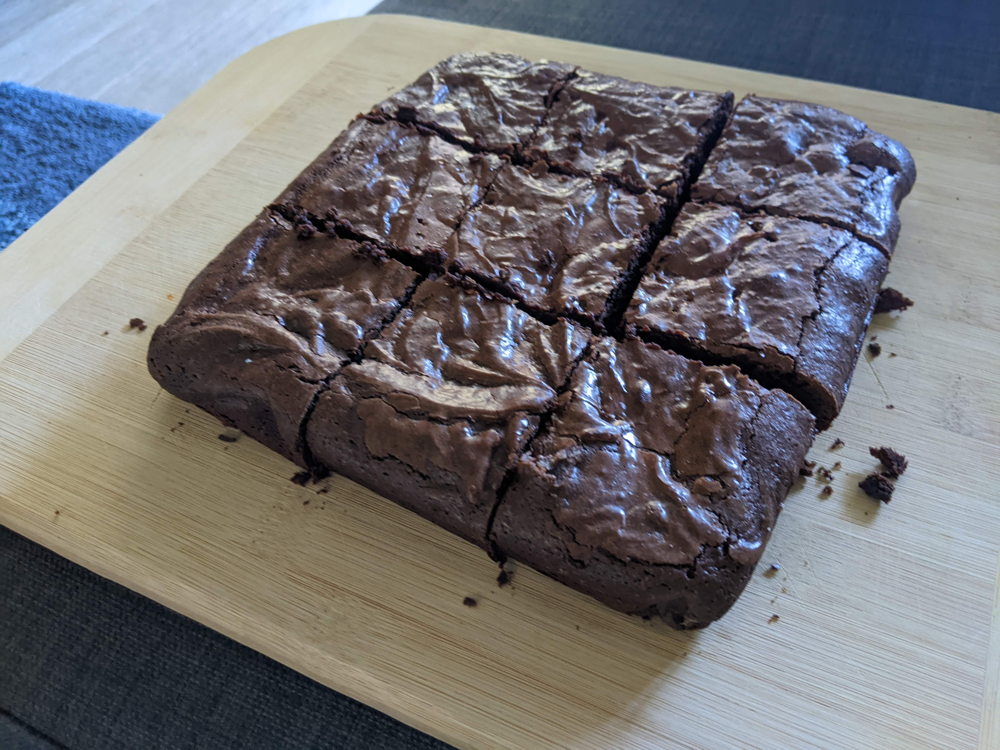

Fudgy Brownies
Contents
Fudgy Brownies#
Adapted from this video.
Ingredients#
1/4 cup of Trader Joe’s Cacao Powder
1 stick (1/2 cup) unsalted butter (room temperature)
3/4 cup white granulated sugar
1/3 cup brown sugar
3 eggs
1/2 cup + 2 tbsp all purpose flour
Pinch of salt
Instructions#
Melt chocolate and butter in a large bowl over hot, simmering water.
In the past, I’ve just microwaved it and always found the butter melts way quicker than the chocolate and sometimes gets close to burning. Doing it over hot water gave me a lot more control.
Mix the white and brown sugar, and add them a little at a time into the hot chocolate-butter mixture while continuously whisking.
The heat helps dissolve the sugar to some extent, but I could still see some sugar crystals. This didn’t turn out to be an issue.
Set oven to 350F.
Mix the 3 eggs one at a time, whisking a bit more vigorously.
My hands were hurting just a bit from the whisking. I didn’t wait for the eggs to come to room temperature and that didn’t turn out to be an issue (but they were fresh from the grocery store).
Mix the salt, flour, and the cocao powder and sieve them into the mixture all at once. Fold them together with a spatula (not a whisk).
Line an 8x8 inch tin with a baking sheet greased on both sides (so it sticks to the tin).
I just used the paper covering the butter to smear the baking sheet on both sides. It helped that the butter was at room temperature.
Bake at 350F for 35 minutes.
I checked at 30 minutes, a fork came out clean but the top layer was just a little gooey. So I put it back in for 5 more minutes. It was still a tiny bit gooey after that but after cooling, it almost crystalized.
Allow it to cool, turn the pan over, and cut into squares.
First baked: 08/12/2022